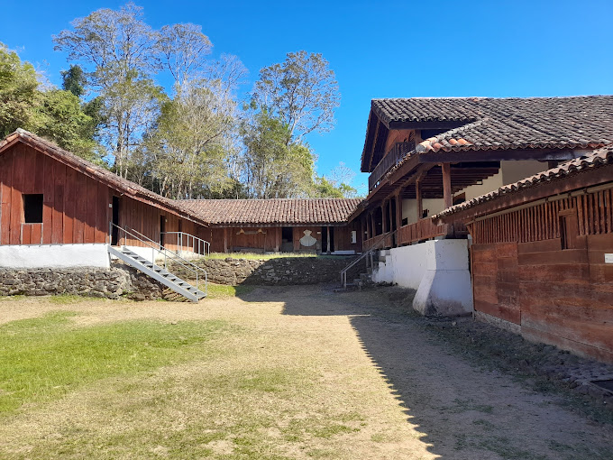

Centros de Rescate
Los centros de rescate de felinos silvestres son instalaciones dedicadas a la rehabilitación, cuidado y, en algunos casos, liberación de felinos que han sido rescatados de situaciones de peligro, abuso o cautiverio no adecuado. Estos centros desempeñan un papel crucial en la conservación de especies amenazadas y en la educación pública sobre la importancia de la protección de la vida silvestre:
Instalaciones de Cuidado y Rehabilitación:
Recintos Apropiados: Los felinos rescatados son alojados en recintos diseñados para imitar su hábitat natural tanto como sea posible, proporcionando espacio para el ejercicio y la exploración.
Atención Veterinaria: Los centros cuentan con personal veterinario especializado que proporciona atención médica y monitorea la salud de los felinos. Esto puede incluir tratamiento de lesiones, enfermedades y programas de nutrición.
Programas de Rehabilitación:
Educación Ambiental:
Investigación:
Liberación Controlada
Colaboración con Autoridades y ONG:
Sostenibilidad y Financiamiento:
Algunos areas de conservación presentes
Área de Conservación Guanacaste (ACG)
El Área de Conservación Guanacaste (ACG) está de hecho involucrada en la protección de los felinos. Esta área de conservación se encuentra en el noroeste de Costa Rica, en la provincia de Guanacaste. Comprende varios Parques Nacionales: Santa Rosa, Guanacaste y Rincón de la Vieja; así como la Estación Experimental Forestal Horizontes y el Refugio de Vida Silvestre Junquillal.
El ACG alberga un bloque continuo de ecosistemas marino-costeros, bosque tropical seco, bosque lluvioso y bosque nuboso, donde se estima que existen aproximadamente 235,000 especies, lo que representa el 65% de las especies estimadas en Costa Rica y el 2.6% de la biodiversidad global.
Contactos
Email: acg@acguanacaste.ac.cr
Teléfono: +506 6665051
Horario: Todos los dias de 8 am a 4:30 pm
Cobra entrada: Sí
Reserva Biológica Bosque Nuboso Monteverde
Ubicación:
Clima y Ecosistema:
Biodiversidad:
Actividades:
Conservación:
Historia:
Turismo Responsable:
Contactos
Horario de apertura: de 7:00 a 16:00
Precio: 20$ entrada general/10$ entrada reducida/niños menores de 6 años: gratis.
También puede pagar en colones